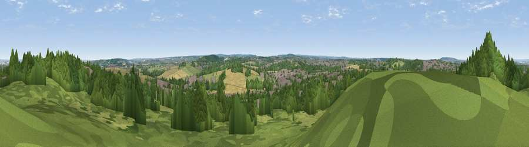

Viewpoint near Hextable
#38385 in England · top 37% of its area beats it · near Hextable · path 137 mWhere it is
The exact computed spot (TQ 52075 70925). Click the marker for map links.
Public access: the nearest public right of way is about 137 m away — the final stretch may cross private land. Computed from Natural England's CRoW access layer and OpenStreetMap rights of way — not the legal definitive map. Always verify locally.
The view, rendered

A 360° render of this exact spot computed from the terrain model, tree cover and land cover — summer colours, afternoon light, calibrated against photographs of famous viewpoints. Real trees, hedges and buildings will differ in detail.
The panorama
Grey silhouette: terrain skyline in each direction (720 bearings, Earth curvature and refraction included). Dashed green: skyline with trees (+15 m) and buildings (+8 m) as obstacles. Blue strip: how far the ground is visible on each bearing.
Where the view opens
Wedge length = distance to the farthest visible ground on that bearing (vegetation-aware). Rings at 10, 25 and 50 km.
What fills the view
56% woodland · 20% grassland · 14% built-up · 10% cropland
Angular shares of the visible panorama (visual magnitude), not map area. Landscape diversity 0.51 (0–1 Shannon).
Key numbers
More beautiful places nearby
The staircase of upgrades: each row has a higher view potential than everything closer. Driving times are estimates from straight-line distance, calibrated against real road routing — check an actual route before setting out.
| Place | Direction | Drive | Score |
|---|---|---|---|
| Viewpoint near Hextable | NNW · 0 km | ~1 min | 37.6 |
| Viewpoint near Farningham | SE · 6 km | ~13 min | 39.1 |
| Viewpoint near Ebbsfleet Valley | E · 8 km | ~16 min | 41.1 |
| Windmill Hill | E · 13 km | ~24 min | 46.7 |
| Viewpoint near Wrotham | SE · 14 km | ~25 min | 53.6 |
| Viewpoint near Wrotham | SE · 15 km | ~26 min | 54.4 |
| Viewpoint near Trottiscliffe | SE · 15 km | ~27 min | 60.3 |
| Viewpoint near Vigo Village | SE · 15 km | ~27 min | 60.7 |
51.41695, 0.18557 · source: screening · position refined by local search. Computed location — check access rights before visiting.